This page helps engineers and security reviewers recognize unauthenticated CTR, understand the resulting exposure, and choose a proportionate fix. Every target is a self-contained browser simulation. Use these techniques only on systems you own or are explicitly authorized to assess.
How the weakness arises
NIST SP 800-38A defines CTR as a confidentiality mode. It encrypts a sequence of distinct counter blocks under key K to produce a keystream S, then combines that keystream with plaintext through XOR. Encryption is C = P ⊕ S, and decryption reverses it with the same operation.
This construction is fast, parallelizable, and suitable for random access. It also has no built-in way to tell whether the ciphertext was changed. That is not a defect in AES or a hidden weakness in the standard. It is a control boundary. When an application uses CTR without a separate authentication tag, the application accepts risks the mode was never designed to manage.
![Comparison of the three counter-mode options on one axis. AES-CTR alone: keystream encryption with nothing authenticating the ciphertext, so it is malleable and a reused nonce cancels the keystream — confidentiality only. AES-CTR plus HMAC-SHA256 over the counter block and ciphertext under a second independent key, verified before decrypting: tampering and truncation are rejected before any plaintext is returned — authentication you compose yourself. AES-GCM: the same counter-mode keystream plus a GHASH tag over ciphertext and associated data as one primitive, rejecting a 1-bit tamper before decryption completes, provided nonces never repeat.](diagrams/modes-ctr-etm-gcm.svg)
Where the security boundary sits
CTR remains an approved confidentiality mode. NIST IR 8459 reviewed the SP 800-38 series in 2024 and recommended not yet deprecating the SP 800-38A modes other than ECB. That status does not expand CTR's purpose. SP 800-38A documents its malleability and does not claim that it protects integrity.
The practical decision follows from that boundary. If an attacker can modify stored or transmitted ciphertext, the system must authenticate the ciphertext before trusting any plaintext. An authenticated encryption mode such as AES-GCM packages that control into one primitive. An existing CTR format can instead use Encrypt-then-MAC with independent encryption and MAC keys. Both approaches still require disciplined nonce and counter management.
Three root causes, four attack vectors
The four demonstrations trace back to three properties. Side-channel and fault attacks fall outside this page because they concern the implementation rather than the missing authentication control.
- Malleability. XOR has no error diffusion, so changing ciphertext bit
ichanges plaintext bitiwithout damaging adjacent bytes. - Keystream determinism. A fixed key and counter block always produce the same keystream. Reusing a nonce therefore reuses the keystream.
- Missing authentication. Raw CTR carries no MAC or authentication tag, so modification can pass through decryption without a cryptographic error.

Precision bit flipping can escalate privilege
An attacker who can predict a field in the plaintext can calculate the XOR difference between the original and desired values, then apply that difference at the same ciphertext position. The server decrypts the modified value without learning that the ciphertext changed. In the demonstration, role=user becomes role=root while the surrounding token remains intact (Cryptopals Set 4 Challenge 26).

S or the key. The delta they inject into the ciphertext survives decryption unchanged, because XOR is its own inverse.Change a role without the key
The service issues encrypted tokens for user accounts (email=...&uid=1000&role=user). You never see the AES key.
Keystream reuse creates a two-time pad
If two messages use the same key and initial counter block, they use the same keystream. XORing the ciphertexts cancels that keystream and leaves C₁ ⊕ C₂ = P₁ ⊕ P₂. The attacker has not recovered the AES key, but no longer needs it to compare and recover the plaintexts (Cryptopals Set 3 Challenges 19 and 20).
The result supports two practical recovery paths.
- Known plaintext recovery. A known header, fixed prefix, or message reveals the corresponding bytes in the other message.
- Crib dragging. Plausible words can be tested across the XOR stream until readable text exposes both messages.

Reuse a keystream and recover plaintext
Random access editing can expose the keystream
An encrypted storage service may expose an edit operation so a caller can replace bytes without rewriting an entire object. If that service re-encrypts attacker-chosen plaintext under the original key and counter, writing all-zero plaintext makes the returned ciphertext equal the keystream because 0x00 ⊕ S = S. XORing that result with the original ciphertext recovers the original plaintext in one request (Cryptopals Set 4 Challenge 25).

Extract a document through an unsafe edit function
Extracted Raw Keystream (hex): [Awaiting extraction]
Recovered Plaintext: [Awaiting extraction]
Counter rollover creates keystream collisions
In CTR mode, the counter block is divided into a fixed Nonce and an integer counter field of length L bits. When encrypting long data streams or high-volume network packets without rekeying, the counter reaches 2ᴸ − 1 and rolls over modulo 2ᴸ. This causes the block cipher to encrypt previously used counter blocks, generating duplicate keystreams within the exact same session or connection. NIST SP 800-38A §6.5 requires the counter blocks to be distinct not merely within one message but "across all of the messages that are encrypted under the given key".
The simulator below wraps a deliberately tiny counter field in software so the collision is visible within a handful of blocks. What it proves is the underlying invariant — an identical counter block under an identical key always regenerates an identical keystream block — not that AES itself overflowed a counter. Deployed protocols meet this limit by sizing the field up front — RFC 3686 §4 gives the block counter 32 bits, capping one packet at 232 − 1 blocks (68,719,476,720 octets) before the counter would repeat under the same key.

Counter rollover & collision simulator
Three quieter failures the missing tag allows
Bit-flipping and keystream reuse are the headline attacks. An unauthenticated stream also fails in three less obvious ways, two of which a tag over the ciphertext closes and one of which it does not:
- Truncation. CTR needs no padding, so a shortened ciphertext is still a well-formed ciphertext. Chopping trailing bytes yields a clean, shorter plaintext with no block-alignment or padding error to notice —
{"user":"alice","admin":false}becomes{"user":"alice", and a lenient parser may accept what is left. - Splicing. Two messages encrypted under the same key and initial counter share a keystream position for position, so a block from one decrypts correctly in the other. An attacker who knows the counter layout can move or graft blocks between messages without touching the key.
- Replay. A recorded ciphertext, resent later, decrypts correctly — and this one survives authentication. A MAC or AEAD tag proves a message is authentic, not that it is fresh.
Truncation and splicing are both closed by a tag computed over the whole ciphertext, which is what Option B's third rule is for. Replay needs separate handling, and NIST says so directly for GCM: SP 800-38D Appendix D notes that GCM "does not inherently prevent an adversary from intercepting the output of an invocation of authenticated encryption and 'replaying' it," and offers two remedies — monitor for duplicate IVs presented for decryption, or bind "a sequential message number or a time stamp" into the associated data so a stale message fails on inspection after the tag verifies.
How to find the same weakness
A behavioral test can confirm that a weakness exists, but it cannot prove that a system is safe when the test does not trigger. Pair observation with source review so parser rejection is not mistaken for cryptographic authentication.
- Behavioral testing.
- Test for malleability: flip a single non-essential bit in ciphertext (e.g. whitespace or timestamp byte) and observe if the server accepts it without raising an authentication error.
- Test for nonce reuse: send two identical plaintext payloads. If the returned ciphertexts are byte-identical across separate requests, the system is reusing nonces.
Both tests confirm a weakness when they fire, but neither clears a system when they do not. Identical-plaintext probing misses a service that reuses a nonce across different plaintexts, and a server that rejects a flipped bit may be failing a parser or schema check rather than verifying a MAC. Treat a negative result as inconclusive and confirm in source.
- Source review.
- Grep for raw CTR modes:
MODE_CTR,modes.CTR(,/CTR/, orAES/CTR/NoPadding. - Check whether decryption verifies a MAC: if
cipher.decrypt()is called without a preceding constant-time HMAC check or AEAD tag verification, the implementation is vulnerable. - Inspect counter initialization: look for hardcoded IVs/nonces (e.g.
iv = b'\x00' * 16), missing IV increments, or static counter prefixes.
- Grep for raw CTR modes:
The fix authenticates the ciphertext
Use an authenticated encryption mode for new designs. Keep AES-CTR only when an existing format, device, or protocol prevents replacement, and then add a separate MAC using the Encrypt-then-MAC construction. Both choices close the demonstrated integrity gap, but the composed option creates more key, format, and verification decisions for the application to manage.
Option A uses an AEAD
AES-GCM (SP 800-38D) and ChaCha20-Poly1305 (RFC 8439) provide confidentiality and integrity as a single primitive, and verify the tag before releasing any plaintext. Under GCM you are still running counter-mode encryption — the tag is what is new. Associated data (aad) is authenticated but not encrypted, which is where a message number, version tag, or recipient identifier belongs.
// AES-GCM. The 96-bit nonce MUST be unique per key — never reuse one.
async function seal(keyBytes, plaintext, aad) {
const key = await crypto.subtle.importKey("raw", keyBytes, "AES-GCM", false, ["encrypt"]);
const nonce = crypto.getRandomValues(new Uint8Array(12));
const ciphertext = new Uint8Array(await crypto.subtle.encrypt(
{ name: "AES-GCM", iv: nonce, additionalData: aad }, key, plaintext));
return { nonce, ciphertext }; // ciphertext already carries the 128-bit tag
}
async function unseal(keyBytes, nonce, ciphertext, aad) {
const key = await crypto.subtle.importKey("raw", keyBytes, "AES-GCM", false, ["decrypt"]);
// Throws if the tag fails. No plaintext is returned on failure — that is the point.
return new Uint8Array(await crypto.subtle.decrypt(
{ name: "AES-GCM", iv: nonce, additionalData: aad }, key, ciphertext));
}Option B keeps AES-CTR and adds HMAC
When CTR is fixed by an existing wire format, hardware dependency, or protocol, add HMAC-SHA256 after encryption. Bellare and Namprempre established the security basis for this ordering. The assurance depends on correct composition, so the implementation must preserve the following three conditions.
- Use two independent keys. Bellare and Namprempre prove the result over a composed scheme whose key is the encryption key concatenated with the MAC key —
K_enc ‖ K_mac, each produced by its own scheme's key generation — so the guarantee says nothing about a single key reused for both operations. Derive the two from one master secret with a key derivation function (KDF) from SP 800-108 Rev. 1, which specifies deriving additional keying material from a secret key using HMAC, CMAC or KMAC. - Authenticate the counter block as well as the ciphertext. A tag over the ciphertext alone leaves the counter block attacker-controlled, which lets it be swapped to replay an old keystream against new ciphertext.
- Verify before decrypting. Encrypt-then-MAC is defined as verifying the tag first and decrypting only on success. Compare with a constant-time primitive —
crypto.subtle.verifyhere,hmac.compare_digestin Python,hmac.Equalin Go — never==on the raw tag bytes.
// AES-CTR + HMAC-SHA256, Encrypt-then-MAC. encKey and macKey are INDEPENDENT.
async function sealEtM(encKey, macKey, plaintext) {
const counter = crypto.getRandomValues(new Uint8Array(16));
counter.fill(0, 12); // 96-bit random nonce ‖ 32-bit counter
// 96 bits keeps random-nonce collision below 2^-32 out to ~2^32 messages, the
// same margin as Option A. The 32-bit counter caps one message at 2^32 blocks.
const k = await crypto.subtle.importKey("raw", encKey, "AES-CTR", false, ["encrypt"]);
const ciphertext = new Uint8Array(await crypto.subtle.encrypt(
{ name: "AES-CTR", counter, length: 32 }, k, plaintext));
const mk = await crypto.subtle.importKey(
"raw", macKey, { name: "HMAC", hash: "SHA-256" }, false, ["sign"]);
// The tag covers the counter block AND the ciphertext.
const tag = new Uint8Array(
await crypto.subtle.sign("HMAC", mk, concat(counter, ciphertext)));
return concat(counter, ciphertext, tag);
}
async function openEtM(encKey, macKey, payload) {
if (payload.length < 16 + 32) throw new Error("payload too short");
const counter = payload.slice(0, 16);
const ciphertext = payload.slice(16, payload.length - 32);
const tag = payload.slice(payload.length - 32);
const mk = await crypto.subtle.importKey(
"raw", macKey, { name: "HMAC", hash: "SHA-256" }, false, ["verify"]);
// Verify FIRST. Never decrypt input whose tag has not been checked.
if (!await crypto.subtle.verify("HMAC", mk, tag, concat(counter, ciphertext))) {
throw new Error("authentication failed");
}
const k = await crypto.subtle.importKey("raw", encKey, "AES-CTR", false, ["decrypt"]);
return new Uint8Array(await crypto.subtle.decrypt(
{ name: "AES-CTR", counter, length: 32 }, k, ciphertext));
}The sample uses a random 96-bit nonce and a 32-bit counter. RFC 3686 uses the same 96/32 field widths but constructs its prefix from a 32-bit security-association nonce and a unique 64-bit per-packet IV, with the block counter starting at one. The browser demonstrations use a simpler 64/64 split with a fresh key for each run. These examples explain the mechanics; a deployed protocol must define and enforce its own complete counter construction.
Migrating a format that is already deployed
Adding authentication changes the data format and its trust boundary. Existing ciphertext was created without an integrity guarantee, so attaching a tag later cannot prove that the stored value was never changed. A safe migration therefore needs four explicit decisions.
- A tag added later proves less than it looks like. Computing a MAC over ciphertext that has been sitting in a store since before the migration authenticates it from that moment on — it says nothing about whether it was already tampered with. Data that needed integrity from the start has to be decrypted and re-sealed, and until it is, treat it as unauthenticated no matter what tag now accompanies it.
- Put a version marker inside the authenticated region. A format version that lives outside the tag — or outside GCM's associated data — is attacker-editable, which lets a downgrade point your reader back at the legacy untagged path. Bind it: in the associated data for Option A, inside the MAC input for Option B.
- Read both formats, write only the new one, and set the end date first. For as long as a reader still accepts untagged input, the system's integrity is that of the weaker format, because that is the branch an attacker will aim at. The dual-read window is a migration tool, not a resting state; decide when it closes before you open it.
- Derive the MAC key, do not promote the existing one. The encryption key already in service must not become the MAC key — that is the single-key mistake above, arrived at by a different route. Derive both from a master secret with an SP 800-108 KDF and rotate on the same schedule.
The same forgery against all three options
One account, one target field, one XOR delta. The attacker does the identical thing in each case — flipping role=user to role=root in the ciphertext. Only what authenticates the ciphertext changes.
Authentication does not remove operating limits
An authentication tag closes the malleability gap, but CTR and GCM still depend on nonce uniqueness, counter capacity, and timely rekeying. A sound primitive can still fail when those operating conditions are not enforced across the whole system.
Nonce uniqueness
Reusing a (Key, Nonce) pair in GCM repeats the counter-mode keystream and can also expose the GHASH authentication key, enabling forgery (Böck et al., USENIX WOOT 2016). SP 800-38D therefore requires the probability of an IV repeat under one key to stay below 2-32. For randomly generated nonces, this means using at least 96 bits and limiting total invocations under one key to 232.
Tag length
The current final edition of SP 800-38D permits several tag lengths, with 64-bit and 32-bit tags restricted to narrow cases. Shortening a tag reduces the work needed for a successful forgery and introduces additional operating constraints. New systems should use a fixed 128-bit tag. NIST's second pre-draft revision proposes removing support for tags shorter than 96 bits, but that proposal is not yet final as of September 2026.
Counter exhaustion and rekeying
A counter block is a fixed nonce field plus an integer counter field, and the counter field's width caps how much data one key can encrypt before a counter block repeats. RFC 3686 §4 uses a 32-bit block counter, permitting "(232)-1 blocks = 4,294,967,295 blocks = 68,719,476,720 octets" per packet. Widening the nonce shrinks the counter and vice versa; the split is a capacity decision, not a detail.

A workable rekeying discipline connects the format decision to an enforceable system limit.
- Fix the split up front from the largest message and the highest message count the key must serve, and record both numbers alongside the format.
- Count invocations per key, not per process. SP 800-38D's 232 ceiling is explicitly "a 'global' requirement" across every instance using that key, so a fleet must divide the budget among its nodes rather than each assuming the whole.
- Rekey on a threshold below the bound, not on reaching it, so that in-flight work cannot cross the limit while the new key propagates.
- Derive the replacement with an SP 800-108 KDF from a master secret, and reset the counter only after the key has actually changed. Resetting a counter under a key still in use is the same failure as reusing a nonce.
Where the standards are heading
Modern protocols did not reject counter-based encryption. They rejected confidentiality without authentication. That distinction matters because it points directly to the remediation decision rather than turning a composition failure into a claim that CTR itself is broken.

TLS 1.3 removed confidentiality-only modes, not counter mode
The five cipher suites defined by the base TLS 1.3 specification all use authenticated encryption. AES-GCM and AES-CCM retain AES counter-mode encryption and add authentication, while ChaCha20-Poly1305 uses a counter-driven stream cipher with a Poly1305 tag. RFC 9150 later added integrity-only suites that provide authentication without confidentiality. It did not reintroduce confidentiality without authentication. The protocol history therefore supports the control boundary demonstrated here without implying that every TLS 1.3 suite uses CTR.
| TLS 1.3 cipher suite (RFC 8446 §B.4) | Keystream | What authenticates it |
|---|---|---|
TLS_AES_128_GCM_SHA256TLS_AES_256_GCM_SHA384 | AES counter mode | GHASH (SP 800-38D) |
TLS_AES_128_CCM_SHA256TLS_AES_128_CCM_8_SHA256 | AES counter mode | CBC-MAC (SP 800-38C) |
TLS_CHACHA20_POLY1305_SHA256 | ChaCha20 block-counter keystream | Poly1305 (RFC 8439) |
The operational lesson is narrower than a survey of every suite. Protocol libraries increasingly make authenticated encryption the default, while raw CTR failures continue to appear where applications assemble cryptography themselves. The review question is therefore not simply whether CTR appears in the code. It is whether the application authenticates the nonce, ciphertext, and relevant context before releasing plaintext.
NIST has not deprecated CTR, and has said what would change that
NIST IR 8459 states that CTR does not provide integrity and is unsafe against an adversary who can modify ciphertext. It nevertheless recommends not yet deprecating the mode because some applications do not have a suitable NIST-approved replacement.
NIST has also decided to revise SP 800-38A to clarify counter requirements and add authentication guidance. Its work on cryptographic accordions and the ongoing SP 800-38D revision may change future recommendations. The current implementation decision does not depend on predicting that outcome. Systems handling attacker-reachable ciphertext should authenticate it now.
Primary references
- NIST SP 800-38A — Recommendation for Block Cipher Modes of Operation: Methods and Techniques. §6.5 defines CTR and its counter-uniqueness requirement; the abstract establishes CTR as one of five approved confidentiality modes; Appendix D gives the error properties, including CTR malleability conditioned on integrity not being protected.
- NIST SP 800-38D — Galois/Counter Mode (GCM) and GMAC. §1 describes GCM's confidentiality as a variation of Counter mode; §5.2.1.2 fixes the seven permitted tag lengths; §8 and §8.3 give the IV-uniqueness bound and invocation ceiling; Appendix C covers short tags; Appendix D covers replay.
- NIST SP 800-38C — Counter with Cipher Block Chaining-Message Authentication Code (CCM). The source for CCM being counter mode combined with CBC-MAC, which is what two of TLS 1.3's five suites run.
- NIST IR 8459 — Report on the Block Cipher Modes of Operation in the NIST SP 800-38 Series (September 2024). The Crypto Publication Review Board's survey of the whole series: §4 covers CTR's lack of integrity and TLS 1.3's move to AEAD; §12 carries the recommendation not to deprecate the SP 800-38A modes yet.
- NIST, Decision to Revise SP 800-38A (April 2023) — the revision goals, including authentication guidance, and the condition under which NIST would consider deprecating these modes.
- RFC 3686 — Using Advanced Encryption Standard (AES) Counter Mode With IPsec Encapsulating Security Payload (ESP).
- RFC 8446 — The base TLS 1.3 specification. Appendix B.4 lists its five AEAD cipher suites.
- RFC 9150 — TLS 1.3 integrity-only cipher suites. These later suites authenticate records without encrypting them.
- RFC 8439 — ChaCha20 and Poly1305 for IETF Protocols. §2.4 gives the block-counter keystream construction.
- Bellare & Namprempre, IACR ePrint 2000/025 — Authenticated Encryption: Relations among Notions and Analysis of the Generic Composition Paradigm (why Encrypt-then-MAC, with independently chosen keys, is the composition to use).
- NIST SP 800-108 Rev. 1 — Recommendation for Key Derivation Using Pseudorandom Functions. The source for deriving independent encryption and MAC keys from one master secret, rather than reusing a single key across both operations.
- FIPS 198-1 — The Keyed-Hash Message Authentication Code (HMAC). Still the current standard, though NIST has proposed withdrawing it and moving the content to SP 800-224, which remains in draft. The stated reasons are editorial — the content suits a Special Publication better, and the specification needs updating for SHA-3 block sizes — not a weakness in HMAC.
- Cryptopals Crypto Challenges — Set 3 (Challenges 19 & 20: Break fixed-nonce CTR mode) and Set 4 (Challenges 25 & 26: Random access read/write CTR and CTR bitflipping).
- Böck et al., IACR ePrint 2016/475 — Nonce-Disrespecting Adversaries. The paper analyzes the additional GCM forgery risk created by nonce reuse.